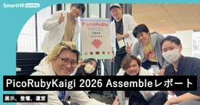
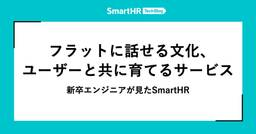
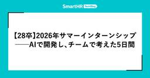
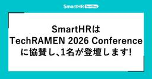

SmartHR Tech Blog
https://tech.smarthr.jp/
SmartHR 開発者ブログ
フィード

Kaigi on Rails 2026レポート —— 渋谷でハチ合わせた、わんダフルな2日間
SmartHR Tech Blog
SmartHRは、2026年10月16日、17日に東京・ベルサール渋谷ガーデンで開催された「Kaigi on Rails 2026」に協賛してブースを出展しました。社員30名が現地参加し、社員2名と技術顧問1名が登壇し、2名がオーガナイザーを務めました。 この記事は、DevRel（Developer Relations）のnattyがまとめてお届けします。参加、登壇、運営の項では、今回Kaigi on Railsに初参加のnoseとEita、登壇したutakaha、udzura、willnet、オーガナイザーを務めたydahとmkmnが、それぞれレポートします！ kaigionrails.or…
2日前

PicoRubyKaigi 2026 Assembleレポート —— 展示、登壇、運営
SmartHR Tech Blog
SmartHRは、2026年10月31日（土）に東京・浅草橋ヒューリックホール＆カンファレンスで開催された「PicoRubyKaigi 2026 Assemble」に協賛してブースを出展し、7名が参加しました。また、プロダクトエンジニアのydahが登壇し、オーガナイザーも務めました。この記事では、その模様をお届けします。 目次 目次 PicoRubyKaigi 2026 Assembleとは 展示 FemtoRubyで3Dアニメーション（ydah） PicoRubyで作ったFIDO2セキュリティキー（nori） PicoRubyのサイクルコンピュータとFemtoRubyのライフゲーム（kino…
2日前

フラットに話せる文化、ユーザーと共に育てるサービス —— 新卒エンジニアが見たSmartHR
SmartHR Tech Blog
はじめまして。2026年4月に新卒1期生のプロダクトエンジニアとしてSmartHRに入社し、メッセージ機能を開発するメッセージユニットで働いているMingyuです。 入社してから半年。あっという間でしたが、振り返ると「入って初めて分かったこと」がいくつもありました。この記事では、その中でも特に印象に残った2つを紹介します。 1つ目は、社内のコミュニケーション文化です。新卒の自分でも気軽に意見を出したり相談したりでき、フルリモートでも問題なくつながれます。入社前に抱いていた不安が、入社すると取り越し苦労だったという話をします。 2つ目は、ユーザーの声を聞き、サービスをユーザーと一緒に育てていく過…
3日前

北陸Ruby会議02にydahが登壇します —— みんなが「発見」したRubyの世界
SmartHR Tech Blog
こんにちは。プロダクト基盤開発本部の@ydahです。2026年11月14日(土)に、福井県立恐竜博物館で開催される「北陸Ruby会議02」に登壇します！ 北陸Ruby会議02とは 北陸Ruby会議02のテーマは、「発見」とのことです。恐竜化石の発掘調査から、恐竜の姿や当時の生態系にまつわるさまざまな発見が生まれてきた福井にちなんで、Rubyにまつわる発見を持ち寄る場として開催されるそうです。 また、会場が恐竜博物館ということもあって、なんと開会前には館内の見学時間も設けられています。一度も行ったことがないので、どんな展示があるのか今から楽しみです。 タイムテーブルも公開されており、MCP（Mo…
3日前

【28卒】2026年サマーインターンシップ —— AIで開発し、チームで考えた5日間
SmartHR Tech Blog
こんにちは！新卒採用担当のgarashiです。 SmartHRは、2026年8月17日〜21日と8月31日〜9月4日の2日程で、プロダクトエンジニア職のサマーインターンシップを開催しました。 限られた5日間で、ユーザー役の社員へのヒアリングから、作る機能の検討、AIを活用した実装までに取り組んだ参加者たち。この記事では、8月31日からの5日間で最優秀賞を受賞したチームの舩橋さん、管さん、橋本さん、大森さんと、メンターのn9te9さんに開発を始める前の議論、ユーザーヒアリングでの気づき、AIを使った開発の工夫をご紹介します。 「こやぎ」チームの皆さんとメンターのn9te9さん SmartHRでは…
4日前

【28卒】2026年サマーインターンシップ —— 最優秀賞チームが語るユーザー視点の開発と学び 1
1
SmartHR Tech Blog
こんにちは！新卒採用担当のikuraです。 SmartHRは、2026年8月17日〜21日と8月31日〜9月4日の2日程で、プロダクトエンジニア職のサマーインターンシップを開催しました。 限られた5日間で、ユーザー役の社員へのヒアリングから、作る機能の検討、AIを活用した実装までに取り組んだ参加者たち。この記事では、8月17日からの5日間で最優秀賞を受賞したチームの佐久間さん、土川さん、石川さん、寳中さんと、メンターのChris.Iさんに、開発の工夫や持ち帰った学びを伺いました。 adachiさん、serizawaさん、saitorycさんと最優秀賞受賞チームのみなさん この記事の内容は、次の…
4日前

チームをまたぐ開発で見直したプロダクトマネージャーの関わり方
SmartHR Tech Blog
この記事は「従業員ポータル領域のPM全員でブログを書く企画」への参加記事です。合計7名のPMが持ち回りで毎週記事を投稿していきます。ぜひご覧ください。 SmartHRの従業員ポータル領域でプロダクトマネージャー（以下、PM）をしているdaisukeです。今回は、担当領域の一つであるSmartHRのホーム画面に関する機能開発の話をします。 ホーム画面は、SmartHRを利用する従業員が自分のタスクやお知らせを確認したり、必要なアプリにアクセスしたりする画面です。私たちのチームでは、ホーム画面のほか、お知らせ機能や通知の開発・改善にも取り組んでいます。ホーム画面は複数のプロダクトへの入り口となるた…
4日前

SmartHRはTechRAMEN 2026 Conferenceに協賛し、1名が登壇します！ #techramen26conf
SmartHR Tech Blog
こんにちは！ プロダクトエンジニアの mktakuya です。 ポータル開発AユニットでSmartHRのホーム画面やお知らせ機能の開発を担当しています。 SmartHRは、2026年11月20日（金）・21日（土）の2日間、北海道富良野市で開催される「TechRAMEN 2026 Conference」に協賛し、私、mktakuyaが登壇します！ 私は、2026年上半期から取り組んでいるプロダクト横断のパフォーマンス課題の改善についてお話しします。 techramenconf.net TechRAMEN 2026 Conferenceとは TechRAMEN 2026 Conferenceは、…
6日前

VP of Engineering 齋藤への協賛企業インタビューが第16回 中高生Rubyプログラミングコンテスト 2026 公式サイトで公開されました
SmartHR Tech Blog
『「作ること」を楽しみ、その先の誰かに届ける —— SmartHRがRubyプログラミングコンテストに期待すること』と題した、VP of Engineeringを務める齋藤諒一への協賛企業インタビューが、第16回 中高生Rubyプログラミングコンテスト 2026の公式サイトで公開されました。 2026.ruby-procon.net
10日前
Fukuoka CRE Lounge 2nd イベントレポート —— 4社が語る、CREのはじめかた・育てかた
SmartHR Tech Blog
こんにちは、SmartHRのCRE（Customer Reliability Engineering）チームでプロダクトエンジニアをしている koichi_s です。 2026年10月14日に福岡で開催された「Fukuoka CRE Lounge 2nd」に参加してきました。今年3月の第1回には登壇者として参加しましたが、今回は聴講側として参加しました。 第1回のイベントレポートは、今回SmartHRから登壇した同じチームのs_arikawaさんが書いていますので、よろしければあわせてご覧ください。 tech.smarthr.jp 第2回は共催が3社から4社に増え、「CRE組織をどう立ち上げ、…
10日前
生成AIで軽くなる見積りとスプリント —— チームの学ぶ機会をどう残すか
SmartHR Tech Blog
こんにちは。7月から給与計算開発部でエンジニアリングマネージャー（見習い）をしている nawoto です。 生成AI（以下、AI）を全面的に使うようになって、開発のやり方がだいぶ変わってきた気がする。実装は圧倒的に速くなったし、計画のたたき台もAIがつくってくれる。そうなると、見積りはもういらないかも、スプリントも短くていいかも、という話をよく聞くようになった。僕もその流れには賛成で、価値を速く届けられることが大事だと思っている。 でも、少し気になっていることもある。見積りは、どんな作業が発生するのかをチームで理解する過程でもあった。スプリントは、同じサイクルを繰り返しながら学んでいく場でもあ…
10日前
新人チーフが『エンジニアのための自己管理入門』を読んで思ったこと
SmartHR Tech Blog
こんにちは、SmartHRの技術基盤部でチーフ（SmartHRにおけるEM：エンジニアリングマネージャー職）を務める @udzura です。私のチームでは、SmartHR基本機能に共通するコンポーネントの修正・改善を担当しています。 最近、小田中育生さんの『エンジニアのための自己管理入門 堅牢でスケーラブルな働き方を構築する技術』（翔泳社）を読みました。この記事では、チーフになったばかりの私が、特に印象に残った箇所を自分の経験とあわせて紹介します。 www.shoeisha.co.jp 『エンジニアのための自己管理入門』の概要 読もうと思った理由 印象に残った箇所 考えるための余白を作る ひら…
12日前
Chromaticのコストを下げたいっ！ —— TurboSnapが効かない原因と、その対策
SmartHR Tech Blog
こんにちは、SmartHRでプロダクトエンジニアをしている@nabeliwoです。 SmartHRでは、多くのプロダクトがChromaticを使ってVRT（Visual Regression Testing）をしています。詳しくは後述しますが、Chromaticは撮影したスナップショットの枚数で課金されるので、気づかないうちにコストが膨らんでいることがあります。私の所属しているチームが開発している給与計算機能でも、約720個あるストーリー（Storybookで、コンポーネントの表示パターンを1つずつ定義したもの）を、ストーリーの変更とは関係なくすべて撮影し直すビルドが半分近くありました。 調べ…
16日前
SmartHRはKomeKaigi 2026に協賛し、1名が登壇します！
SmartHR Tech Blog
こんにちは！ SmartHRのDevRel（Developer Relations）のnattyです。 SmartHRは、2026年10月31日（土）に新潟市のNINNO3で開催される「KomeKaigi 2026」に協賛し、私、nattyが登壇します！ 私はDevRelとして、主にエンジニアの登壇を支援しています。後押しする立場だからこそ自分も同じ土俵に立ちたいと考え、自らも登壇を重ねてきました。KomeKaigi 2026では、その経験と、登壇を通して学んだことをお話しします。 komekaigi.dev KomeKaigi 2026とは KomeKaigiは、新潟のおいしいお米とお酒を楽…
17日前
不具合の知見を、次のレビューへ —— レビュー観点を蓄積・活用する3層構造の運用
SmartHR Tech Blog
はじめに こんにちは。SmartHRでQAエンジニアをしているnotchです。 私が担当しているプロダクトでは定期的に不具合を振り返っていたのですが、得られた知見を次の仕様やテストケースのレビューに十分生かせていませんでした。 今回は、その知見をレビュー観点として整理し、3層に分けて蓄積・活用する仕組みと運用を紹介しようと思います。 解決したい課題 不具合の振り返りで得た知見をレビューで生かすには、個々の事象を「何を確認すべきか」という観点に整理し、必要な場面で参照できるようにする必要がありました。 しかし、そのための継続的な運用が定まっておらず、せっかく不具合から得た知見を十分に反映できてい…
18日前
新卒N年目の勉強会&交流会！#6 レポート
SmartHR Tech Blog
こんにちは！プロダクトエンジニアのna2keraです。 SmartHRは、2026年10月10日（土）に東京・六本木のSmartHR Spaceで開催された新卒N年目の勉強会&交流会！#6に協賛し、会場提供と懇親会のフード提供を行いました！ この記事では、イベントの模様と登壇内容をレポートします。 新卒N年目の勉強会&交流会！#6とは 新卒N年目の勉強会&交流会！は、新卒エンジニア同士が好きな技術について話す勉強会イベントです。普段は関わりにくい、会社を超えた横のつながりをつくる場として開催されており、初登壇や初めてイベントに参加する方も多く参加します。 今回の#6は拡大版として土曜開催となり…
23日前
給与計算を使う側だった私が、つくる側になって4ヶ月 —— 1社分の実務では見えなかったエンタープライズの難しさ
SmartHR Tech Blog
こんにちは！ 2026年6月に入社したプロダクトエンジニアのnobuです。給与計算プロダクトで、基盤機能を担当する開発チームに所属しています。 私は経理・労務の仕事を3年半ほど経験したあとエンジニアに転身し、エンジニアとしては8年ほどになります。入社して4ヶ月、思っていた以上にプロダクト開発以外の業務にも関わってきました。インターンのメンターや、SmartHR LT大会（1人5分ほどの短い発表会）の運営などです。 この記事では、給与計算を「使う側」から「つくる側」になって4ヶ月でやったことと、これまでの経験だけでは見えなかったことを振り返ってみます。 プロダクト開発 以前の私は、小さな会社で1…
24日前
データベースとコードの長期的なリファクタリングを安全に進めるための取り組み —— 従業員データの複雑さを解きほぐす
SmartHR Tech Blog
こんにちは、プロダクトエンジニアの山本（@kymmt90）です。SmartHRの人給基幹プロダクトの技術基盤部門に所属しています。 技術基盤部門において私が所属するユニットでは、SmartHRの従業員データに関する機能を開発しやすくするための改善を進めています。具体的には、従業員データの一部を保存するデータベースのテーブルと、そのテーブルを扱うコードの複雑さを減らすためのリファクタリングを進めています。また、この改善には長期の作業が必要になるという特徴があります。 本記事では、こういったデータベースとコードの長期的なリファクタリングを安全に進めるための方法について紹介します。ポイントは次の3点…
25日前
CPOとDirectorが語る、これからのプロダクト組織 —「AIの登場で、デザイナーの重要性はむしろ高まっている」—
SmartHR Tech Blog
こんにちは！ SmartHRで採用を担当している北林です。 2015年に提供を始めた「SmartHR」は、労務管理から勤怠、給与計算、タレントマネジメント、情シス、従業員ポータルへと領域を広げてきました。2026年度は、従業員向けやバックオフィス向けなど複数のAIエージェントを提供する方針も打ち出しています。 プロダクトの数が増え、AIが業務の前提を変えつつあるなかで、プロダクト組織のかたちも変わり始めています。 2026年1月には4つの事業領域を軸にした組織へと再編し、プロダクトデザイン組織も、各事業領域にプロダクトデザインの責任者を置く体制に移りました。さらに9月からは、CPOの安達さんが…
25日前
「AIの審査」で締めるチームビルディング —— ファシリテーターの負担ほぼゼロで、もうひと盛り上がり！
SmartHR Tech Blog
こんにちは！ SmartHRの給与計算開発チームで、プロダクトエンジニア（以降、PdE）のチーフをしている@diescakeです！ 私たちのチームでは、チームビルディングの一環でちょっとしたレクリエーション（※）を実施することがあります。この記事では、そのレクリエーションの締めに「AIによる審査」をひとつ足してみたら、企画の負担をほとんど増やさずに場がもう一段盛り上がった、という話をご紹介します！ 実際にやった2つのレクリエーションも一例として紹介するので、皆さんのチームでアレンジする際の、何かしらの参考になれば幸いです〜🙏 ※ 社内ではワークショップと呼びます。今回はカジュアルな事例なのでレ…
25日前
システムが正常でも、お客さまの業務は止まっているかもしれない。SmartHRのCREが挑む「顧客の可観測性」
SmartHR Tech Blog
こんにちは！SmartHR 採用担当の南石（@nanseki_o）です。2026年7月にSmartHRに2回目の入社をしました。 本日は、出戻りしたら爆誕していた「CRE」というロールについてインタビューした内容をお届けします。 CRE（Customer Reliability Engineering）という言葉を聞いたことはありますか。 技術的な問い合わせに対応するエンジニア、カスタマーサポートと開発チームの橋渡し役といったイメージを持つ方もいるかもしれません。 SmartHRのCREは2025年7月に誕生した組織です。お客さまからの技術的な問い合わせへの対応も担っていますが、それは活動の一…
1ヶ月前
名古屋Ruby会議05に協賛しました！——粋な出囃子と落語で彩られたトーク
SmartHR Tech Blog
SmartHRは、2026年9月19日(土)に愛知県名古屋市の大須演芸場で開催された「名古屋Ruby会議05」に協賛し、8名が参加、1名が運営に携わりました。 この記事では、参加したメンバーのnaitoh、delhi09、osyoyu、natty、そして運営として携わったsoulがイベントの模様をレポートします！ 会場の大須演芸場 目次 目次 名古屋Ruby会議05とは 運営 スポンサーLT 印象に残ったセッション 「Ruby のブロックが、GPU のカーネルになる」 @yujiteshima 「特殊変数大全」 @dak2 「System Test is dead, long live Sys…
1ヶ月前
Kaigi on Rails 2026に向けて「きみはどのハチ公？ 開発タイプ診断！」社内お披露目会を開催しました！
SmartHR Tech Blog
こんにちは、2026年4月にSmartHRへ新卒で入社したnose（のせ）です。 SmartHRは、2026年10月16日（金）・17日（土）にベルサール渋谷ガーデンで開催されるKaigi on Rails 2026にブースを出展します！ブースでは、「きみはどのハチ公？ 開発タイプ診断！」を開催します。開発の中で好きなことや、うれしいと感じる場面について答えると、今の自分に近いハチ公タイプが分かる診断です。Kaigi on Railsのコアコンセプトは、「初学者から上級者までが楽しめるWeb系の技術カンファレンス」です。診断も、経験に関係なく楽しんでもらえるようにしました。 イベントに先駆けて…
1ヶ月前
点を線にして、QA組織の次の「当たり前」をつくっていく
SmartHR Tech Blog
こんにちは、品質保証本部のtarappo です。 2024年9月にSmartHR 品質保証部のActing Managerとして入社して、現在は品質保証本部のDirectorとして働いています。 入社してからあっという間に2年が経ちました。 その間にいろいろなことを経験しつつ、さまざまなことに取り組んできました。 それらは別々の施策を次々と進めたというより、多くの「点」をつなぎ、組織として継続的に品質を高められる一本の「線」にしていく取り組みだったと考えています。 個々の取り組みについては、ブログや登壇などでその都度発信してきました。 今回はそれらの詳細を説明するのではなく、これまでの記事も参…
1ヶ月前
SmartHRはKaigi on Rails 2026に協賛し、30名が参加、3名が登壇、2名がオーガナイザーを務めます！ そして、ブース出展と、学生参加支援、事後勉強会も実施します!! 渋谷でハチ合わせ!!!
SmartHR Tech Blog
SmartHRは、2026年10月16日、17日に東京・ベルサール渋谷ガーデンで開催される「Kaigi on Rails 2026」に協賛します！ 当日はブースを出展し、社員30名が現地参加します。また、関係者3名が登壇し、2名がKaigi on Rails 2026のオーガナイザーを務めます。 あわせて、学生参加支援（記事公開時点で募集は終了）と、Kaigi on Rails 2026の事後勉強会の開催も予定しています。 kaigionrails.org 目次 目次 テーマ：「渋谷でハチ合わせ！」 協賛 ブース 学生スカラシップ 登壇 「Railsのためのパスキー実践入門 〜マルチテナントS…
1ヶ月前
PicoRubyKaigi 2026 Assembleにydahが登壇します —— オーガナイザーが紹介する当日の見どころ
SmartHR Tech Blog
こんにちは。SmartHRのR&Dユニットに所属するプロダクトエンジニアのydahです。大阪に住んでいてKyobashi.rbの主催や関西Ruby会議09のチーフオーガナイザーを務めました。 2026年10月31日（土）に浅草橋ヒューリックホール＆カンファレンスで開催されるPicoRubyKaigi 2026 Assembleに、SmartHRからわたしが登壇します。わたしはこのカンファレンスのオーガナイザーのひとりでもあるので、登壇のお知らせとあわせて、当日の見どころも紹介します。 PicoRubyKaigi 2026 Assembleとは PicoRubyKaigiは、小さなRubyKai…
1ヶ月前
YAPC::Tokyo 2026にydahが登壇します
SmartHR Tech Blog
こんにちは！ SmartHRのエンジニアの@ydahです。 2026年11月28日（土）・29日（日）に東京ビッグサイトで開催される「YAPC::Tokyo 2026」に登壇します！ 私は普段、Rubyのコミッターとして、Rubyの構文解析器の改善や、パーサージェネレーター「Lrama」の開発に取り組んでいます。今回はその活動ともつながるテーマとして、Perl・Ruby・PHPの文法ファイルを読み比べる発表をします。 yapcjapan.org YAPC::Tokyo 2026とは YAPC::Tokyo 2026は、一般社団法人Japan Perl Associationが主催する技術カンフ…
1ヶ月前
RubyKaigi 2026 follow upレポート —— SmartHRから3名が登壇し、ブースも出展！
SmartHR Tech Blog
こんにちは！プロダクトエンジニアのitojumです。 SmartHRは、2026年9月5日に東京都港区三田の株式会社IVRyで開催されたRubyKaigi 2026 follow upに協賛し、SmartHRのRubyKaigi 2026登壇者による発表のその後を報告し、スポンサーLT・ブース出展を行いました！ この記事では、イベントの模様と登壇内容をレポートします。 RubyKaigi 2026 follow upとは RubyKaigi 2026 follow upは、RubyKaigi 2026で「今後はこうしていこうと思っています」と言っていた人に、その「今後」を伺うイベントです。登壇…
1ヶ月前
第92回 Ruby関西 勉強会レポート
SmartHR Tech Blog
こんにちは、ydahです。普段はSmartHRでプロダクトエンジニアとしてR&Dユニットに所属しています。大阪に住んでいてKyobashi.rbの主催や関西Ruby会議09のチーフオーガナイザーを務めました。 2026年9月17日（木）に、第92回 Ruby関西 勉強会が開催されました。SmartHRは本イベントに協賛し、グランフロント大阪タワーAの34階にあるSmartHR大阪オフィスを会場として提供しました。 rubykansai.doorkeeper.jp この記事では、当日の様子をお届けします。 第92回 Ruby関西 勉強会の会場の様子 目次 目次 開催概要 スポンサートーク: Ra…
1ヶ月前
Roppongi.rb #46 がSmartHRで開催されました
SmartHR Tech Blog
こんにちは！SmartHRでプロダクトエンジニアをしているmatsugenです。 2026年9月10日（木）、SmartHRのオフィスで「Roppongi.rb #46」が開催されました。この記事では、当日の様子や登壇内容をレポートします。 まだまだ暑さの残る9月の夜、平日の仕事終わりにもかかわらず、多くのRubyistの皆さんにお集まりいただきました。 roppongirb.connpass.com 目次 目次 Roppongi.rbとは 参加人数 開幕 スポンサーLT 参加者LT created_atがレコード作成日時じゃなかった件：国枝桂亮さん MIDoRI開発進捗報告 9月号：Tosh…
1ヶ月前